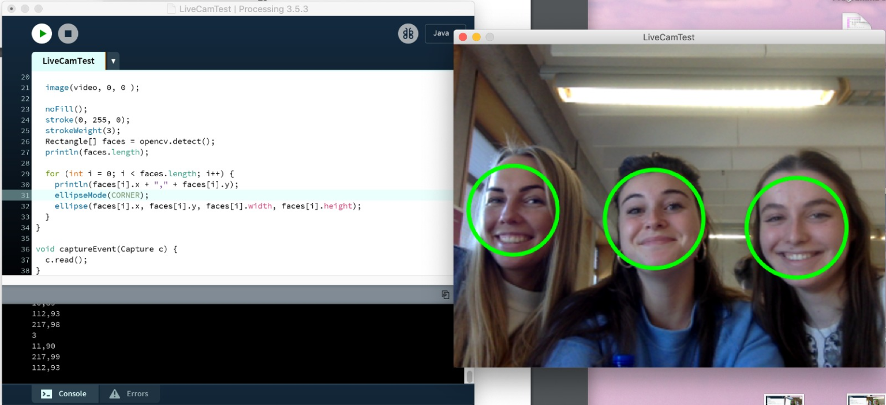
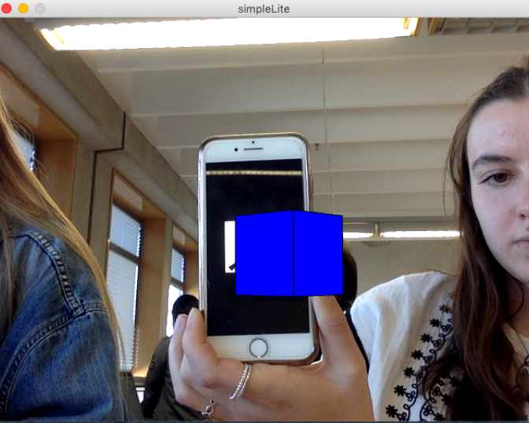

Opdracht 1
De eerste opdracht was om een code te schrijven dat 3 (of meer) ellipsen tekent. Deze moesten op verschillende plekken staan, verschillende kleuren hebben, verschillende hoogtes en breedtes hebben en wel, geen of een verschillende kleur rand hebben. Ik heb geprobeerd het voorbeeld na te maken. Hiervoor heb ik mijn eigen kleurcodes gebruikt en die in "fill" gezet in mijn code. Verder heb ik twee van de ellipsen een rand gegeven en een ellips zonder rand gelaten. Tot slot heb ik nog met de coördinaten van de ellipsen gespeelt, om ze op een andere plek te zetten. Uiteindelijk is het best goed gelukt!
Opdracht 2
De tweede opdracht was om een code te schrijven dat tenminste vier verschillende vormen zou tekenen. Dit mochten alleen geen cirkels zijn. Verder moesten de vormen verschillende kleuren hebben en op verschillende plekken staan. Ik heb hiervoor de vormen "line", "triangle", "rect" en "quad" gebruikt. Door bij "fill" steeds een andere kleurcode neer te zetten heb ik ze allemaal andere kleuren gegeven en hetzelfde heb ik voor de randen gedaan door dit bij "stroke" in te vullen. Tot slot heb ik weer met de coördinaten van de vormen gespeelt om ze allemaal op een andere plek te krijgen. Dit was best even uitvogelen met de x- en y-assen, maar uiteindelijk is het wel gelukt.
Opdracht 3
De derde opdracht was om een code te schrijven dat tenminste twee verschillende vormen tekende, met verschillende kleuren en deze moest je interactief maken. Hiervoor heb ik een cirkel en een lijn gebruikt en hierbij volgt het uiteinde van de lijn steeds het rondje, dus de lijn probeert steeds dichterbij te komen en hierdoor wordt die ook wat kleiner. Daarnaast wordt de cirkel steeds groter.

Opdracht CV1
Bij de eerste opdracht van computer vision gingen we gebruik maken van een webcam/camera! Hiervoor gingen we de OpenCV libary gebruiken. Eerst moest ik dan ook wat libary's installeren voordat ik aan de slag kon gaan. De eerste opdracht ging over face detection (gezichtsherkenning). Er werd nu een vierkante rand getoond bij elk gezicht dat de camera zag en hiervan moest ik een rondje maken. Daarvoor heb ik "ellipse" in plaats van "rect" gebruikt in mijn code. Uiteindelijk kwam er dus een cirkel om elk gezicht dat op de camera te zien was.
Opdracht CV2
De tweede opdracht bij computer vision was om de code zo aan te passen dat er een rode clownsneus te zien was in plaats van je echte neus. Hiervoor heb ik onder andere gebruik gemaakt van CASCADE_NOSE in mijn code. Op de afbeelding is te zien dat er uiteindelijk dus een rode clownsneus op de plek van je echte neus getoond werd!
Opdracht CV3
Voor de derde opdracht van computer vision moest ik weer nieuwe voorbeelden downloaden. Hierbij gingen we aan de slag met het volgen van kleuren die de camera ziet! Ik heb dus het voorbeeld OpenCVMultipleColorTrackingLiveCamera uitgevoerd. Hierbij kon je de toetsen 1 t/m 4 op je toetsenbord linken aan een kleur, door ze in te drukken en tegelijkertijd op een kleur in je scherm van de camera te klikken. De kleuren kreeg je dan er naast te zien met een klein extra schermpje erbij. In dat extra schermpje werd alles met die bepaalde kleur wit en de rest zwart weergegeven. Het was heel gaaf om dit zo te zien!
Opdracht AR
Andere coole dingen die je met je camera en Processing kunt doen is tekens herkennen en deze vergroten met andere afbeeldingen. Dat is waar we de laatste opdracht Augmented Reality over ging. Ook hiervoor moest ik weer een nieuwe libary installeren. We hadden twee blaadjes met een teken die we uiteindelijk voor de camera moesten houden. Als je ze op een bepaalde manier positioneerde pakte de camera het teken en kwam er een blauw blokje naar voren! Dit was alleen wel een heel gedoe.. De camera had best wel moeite met het herkennen ervan en daardoor zat ik een tijdje heel langzaam de tekens heen en weer te bewegen voor de camera. Uiteindelijk is het bij mij wel gelukt, met bij het ene teken op een uitgeprint blaadje en het andere teken via mijn mobiel!
